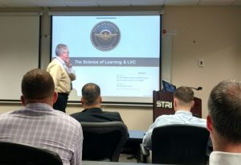
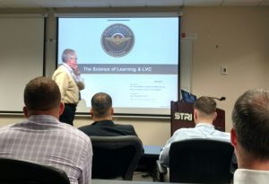

Did you know we have an innovation team in the Navy???!!! Too cool!! Officers from across the Navy are assigned to this council and are working together to discuss and provide solutions for everything from human capital issues like how to identify and retain the best officers for the Navy to determining the most innovative methods for training and readying our force.
 

Today I briefed them on our DoD Instruction Policy that will be going into effect soon. This policy outlines the requirements and responsibilities for the development, management, and evaluation of distributed learning for military and civilians. In other words – it tells the Department of Defense how to choose and use the very best technology for training around the world. As we share this information with the Navy directly, we empower their leadership to share this policy and to require companies that build for the Navy to follow the specifications (or rules for how to manage data from one technology to another) so that all branches and all systems can work together.  THIS is what we call innovative solutions for efficiency!!!
THIS is what we call innovative solutions for efficiency!!!
 Written obscurely on a small well site (
Written obscurely on a small well site ( Maybe we will create a huge turnover and the outcome will be a smaller, more efficient government. Maybe we will have junior people making decisions that aren’t yet qualified to do so. One recent example in one of the military branches involved a low level officer deciding to change the contract for the civilian scientific experts to what is called “lowest bid, technically acceptable.”
Maybe we will create a huge turnover and the outcome will be a smaller, more efficient government. Maybe we will have junior people making decisions that aren’t yet qualified to do so. One recent example in one of the military branches involved a low level officer deciding to change the contract for the civilian scientific experts to what is called “lowest bid, technically acceptable.”
 So how DOES the middle level government work??? When the administration changes, the new President must appoint approximately 4,000 new employees – and they are at the levels just below the secretaries. It is a daunting task for anyone. For a President new to government, I can only imagine it is a significant undertaking. Each of these individuals must be approved by Congress….creating a huge burden on them as well. When the political party remains the same, many of the appointees from the previous administration stay on but when the party changes, nearly everyone moves. The folks that are the glue during these changes are the loyal career civil servants. Were it not for these individuals, we would struggle substantially when our government changes. Imagine just trying to get your computer working or finding files! And what if your filing system differs from the last set of people?! It is imperative that we, as Americans, appreciate the work that these career government employees do. Without them, we would have a government that is susceptible to infiltration by foreign threats every four years! I had no idea how vulnerable we could be!! “Government workers” get a bad rap for being slow moving, unmotivated workers. I have seen anything but that.
So how DOES the middle level government work??? When the administration changes, the new President must appoint approximately 4,000 new employees – and they are at the levels just below the secretaries. It is a daunting task for anyone. For a President new to government, I can only imagine it is a significant undertaking. Each of these individuals must be approved by Congress….creating a huge burden on them as well. When the political party remains the same, many of the appointees from the previous administration stay on but when the party changes, nearly everyone moves. The folks that are the glue during these changes are the loyal career civil servants. Were it not for these individuals, we would struggle substantially when our government changes. Imagine just trying to get your computer working or finding files! And what if your filing system differs from the last set of people?! It is imperative that we, as Americans, appreciate the work that these career government employees do. Without them, we would have a government that is susceptible to infiltration by foreign threats every four years! I had no idea how vulnerable we could be!! “Government workers” get a bad rap for being slow moving, unmotivated workers. I have seen anything but that. But why does all this matter now??? Because many workers who have been in government for 10-20 years are leaving service due to the change in administration, it means many positions are open and when they eventually get filled, the person will be untrained in the position. Further, it means laboratories like ours are left without what is called ‘top cover’. We don’t have anyone to help approve travel or ensure our budget is maintained. Essentially….we are operating like an island and may continue to operate like this through the rest of the fiscal year! It’s important as ever now that we all work together to do our jobs to the very best of our abilities to help Americans!!
But why does all this matter now??? Because many workers who have been in government for 10-20 years are leaving service due to the change in administration, it means many positions are open and when they eventually get filled, the person will be untrained in the position. Further, it means laboratories like ours are left without what is called ‘top cover’. We don’t have anyone to help approve travel or ensure our budget is maintained. Essentially….we are operating like an island and may continue to operate like this through the rest of the fiscal year! It’s important as ever now that we all work together to do our jobs to the very best of our abilities to help Americans!! First, Happy Valentines to all!! – From me and my littlest Valentine 😉
First, Happy Valentines to all!! – From me and my littlest Valentine 😉 Meanwhile….Flynn resigns. Interesting though – How does the government decide what you should or should share with others? If it’s not classified, can I share MY interpretation of our country? Is there an OFFICIAL position of general information? I read twitter like everyone else. I read articles like everyone else. I have some briefings but for the most part, I am just high enough to speak for the government but just low enough that I am not included in most of the official activities at the top. Which meeeeaaaannnnnssss…..I am required to infer and determine for myself what our country thinks and wants. I assume, given that I’m concerned an expert in an area, that speaking for our country means I will do as good of a job as anyone else. But still – WHO is speaking for US? And WHAT are they saying? Do we really know??? Or does it just come out when there is a scandal? Things to consider….
Meanwhile….Flynn resigns. Interesting though – How does the government decide what you should or should share with others? If it’s not classified, can I share MY interpretation of our country? Is there an OFFICIAL position of general information? I read twitter like everyone else. I read articles like everyone else. I have some briefings but for the most part, I am just high enough to speak for the government but just low enough that I am not included in most of the official activities at the top. Which meeeeaaaannnnnssss…..I am required to infer and determine for myself what our country thinks and wants. I assume, given that I’m concerned an expert in an area, that speaking for our country means I will do as good of a job as anyone else. But still – WHO is speaking for US? And WHAT are they saying? Do we really know??? Or does it just come out when there is a scandal? Things to consider….